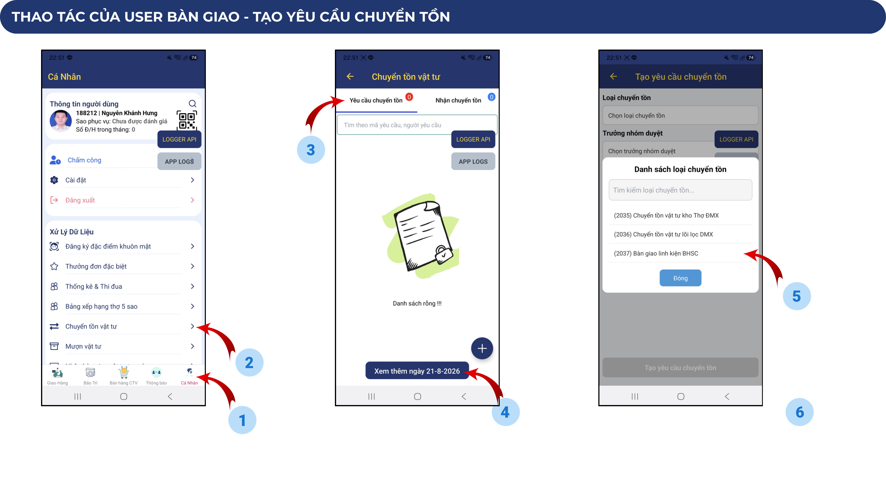
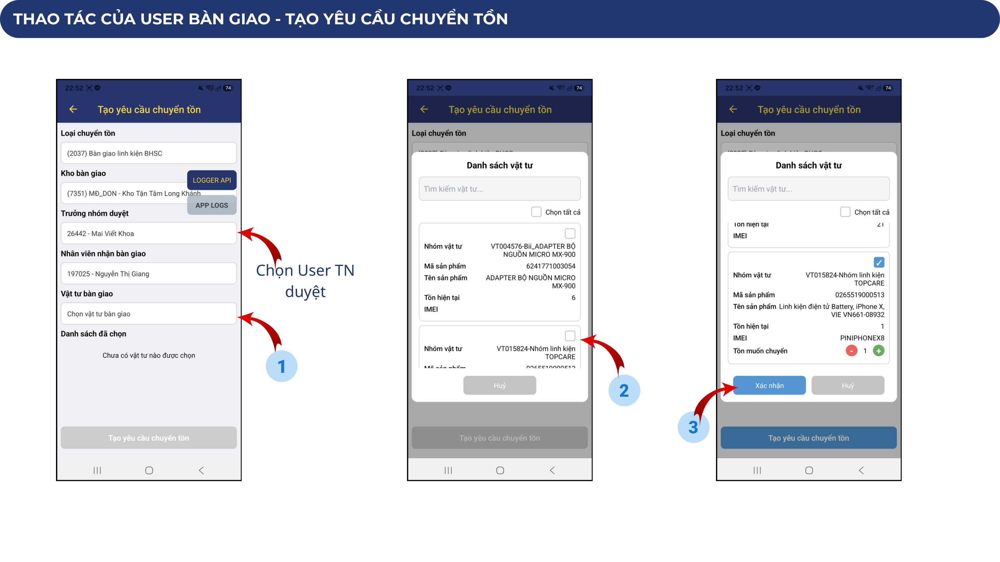
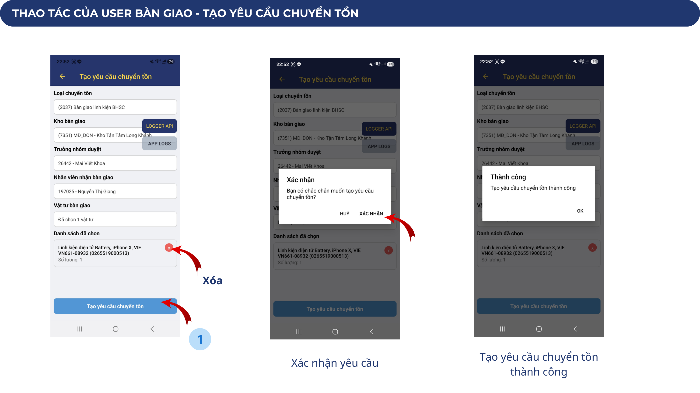
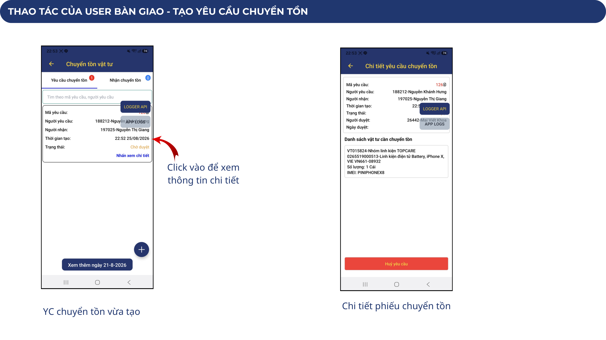
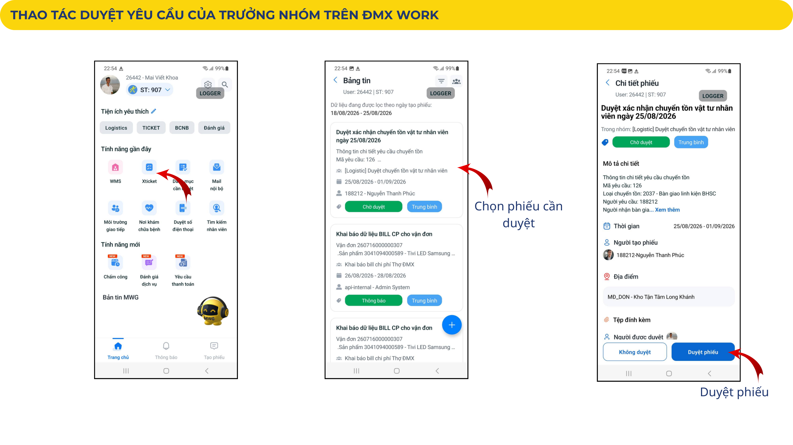
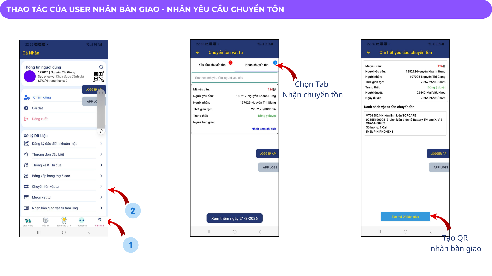
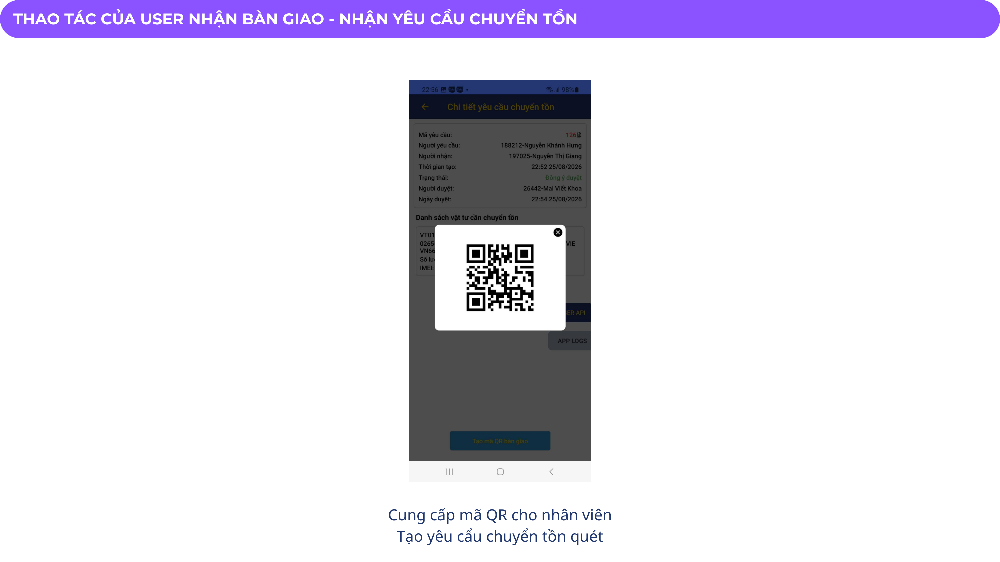
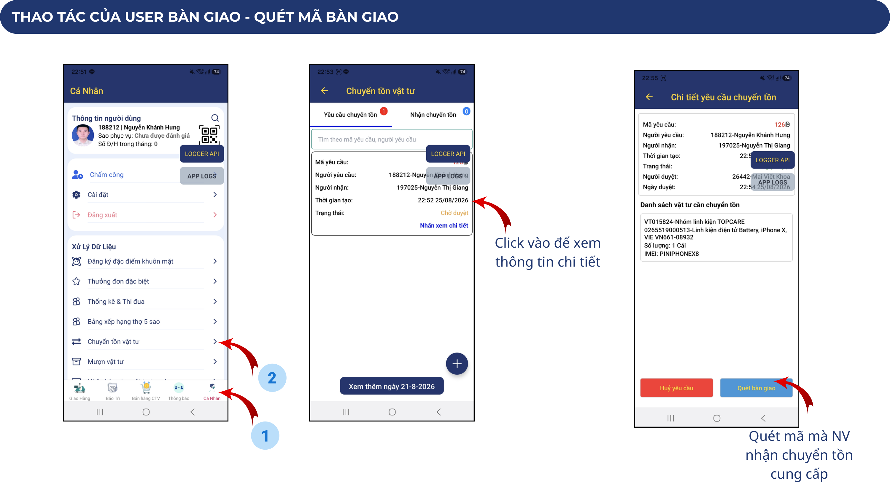
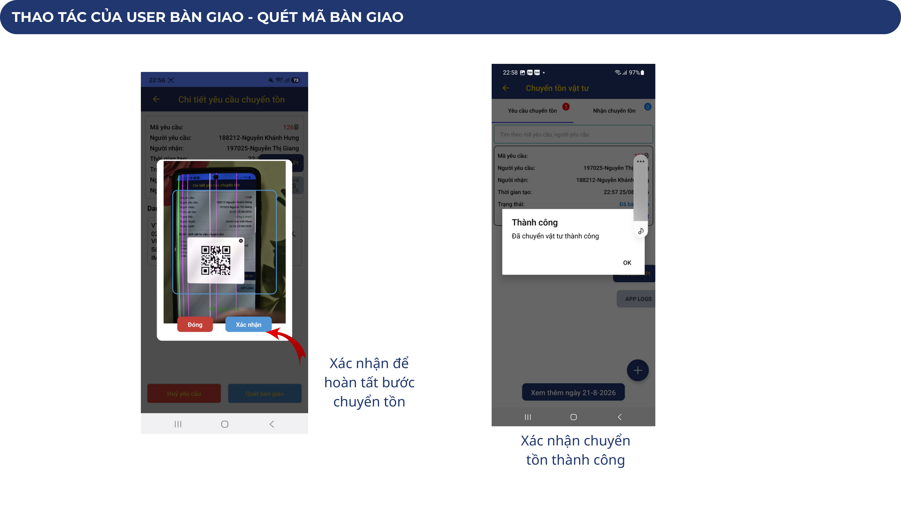
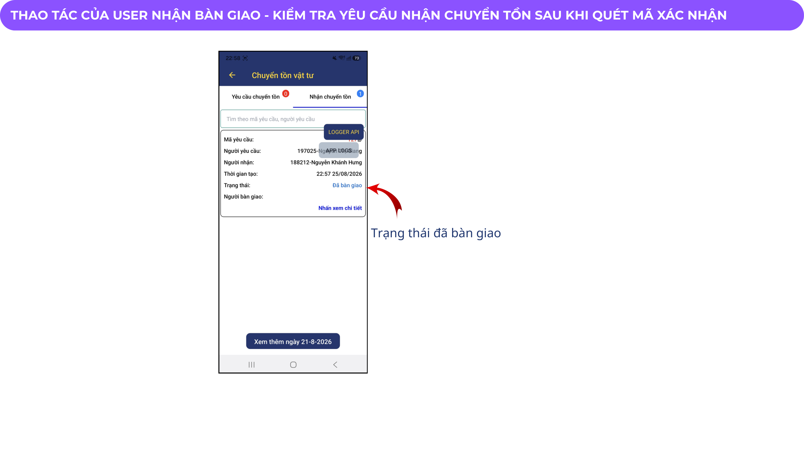

Đặc tả quy trình chuyển tồn linh kiện, phê duyệt của Trưởng nhóm và xác thực chuyển giao 2 chiều bằng mã QR động giữa 2 Kỹ thuật viên / Thợ ĐMX.
Phạm vi áp dụng của quy trình 2037 trên hệ thống Thợ Điện Máy Xanh / CE & Gia dụng
| Hạng mục | Quy định chi tiết |
|---|---|
| Mã Quy trình | 2037 - Bàn giao linh kiện bảo hành sửa chữa |
| Phần mềm thao tác | App ĐMX Work (Ứng dụng làm việc di động của Thợ ĐMX / KTV) |
| Đối tượng tham gia |
1. User Bàn giao (KTV Giao): Nhân viên đang giữ linh kiện trong kho cá nhân cần chuyển giao. 2. Trưởng nhóm (TN): Quản lý trực tiếp phê duyệt danh sách linh kiện chuyển giao. 3. User Nhận bàn giao (KTV Nhận): Nhân viên tiếp nhận vật tư vào kho cá nhân của mình. |
| Loại linh kiện áp dụng | Tất cả linh kiện, phụ tùng thay thế phục vụ sửa chữa Điện tử - Điện lạnh - Gia dụng (CE). |
| Cơ chế xác thực | Xác thực 2 lớp: Phê duyệt của Trưởng nhóm + Quét mã QR động đối soát thực tế giữa 2 nhân viên. |
Trình tự 5 giai đoạn xuyên suốt từ lúc tạo yêu cầu đến khi tồn kho 2 đầu cập nhật
Lựa chọn linh kiện, điều chỉnh số lượng và chọn Trưởng nhóm phê duyệt




Trưởng nhóm kiểm tra tính hợp lý của yêu cầu và phê duyệt chuyển tồn

Nhân viên nhận sinh mã QR động trên ứng dụng và cung cấp cho nhân viên giao


Nhân viên giao quét QR code của nhân viên nhận để kích hoạt chuyển tồn


Xác nhận trạng thái phiếu và biến động tồn kho thực tế của 2 nhân viên

Các quy tắc bắt buộc nhân viên kỹ thuật và Trưởng nhóm phải tuân thủ để tránh thất thoát
Tuyệt đối không được tạo và quét mã QR xác nhận khi chưa kiểm đếm tận tay linh kiện thực tế (ngoại quan, đúng mã, đúng chủng loại, không trầy xước/bể vỡ).
Trưởng nhóm chỉ duyệt phiếu khi nắm rõ nhu cầu điều chuyển linh kiện giữa 2 KTV phục vụ đúng ca sửa chữa máy khách, tránh tình trạng chuyển tồn bừa bãi hoặc thiếu kiểm soát.
Cuối mỗi ca làm việc, KTV phải kiểm tra lại bảng tồn kho linh kiện cá nhân trên App ĐMX Work để đảm bảo khớp đúng giữa số liệu trên hệ thống và linh kiện vật lý trong cốp xe/túi đồ nghề.